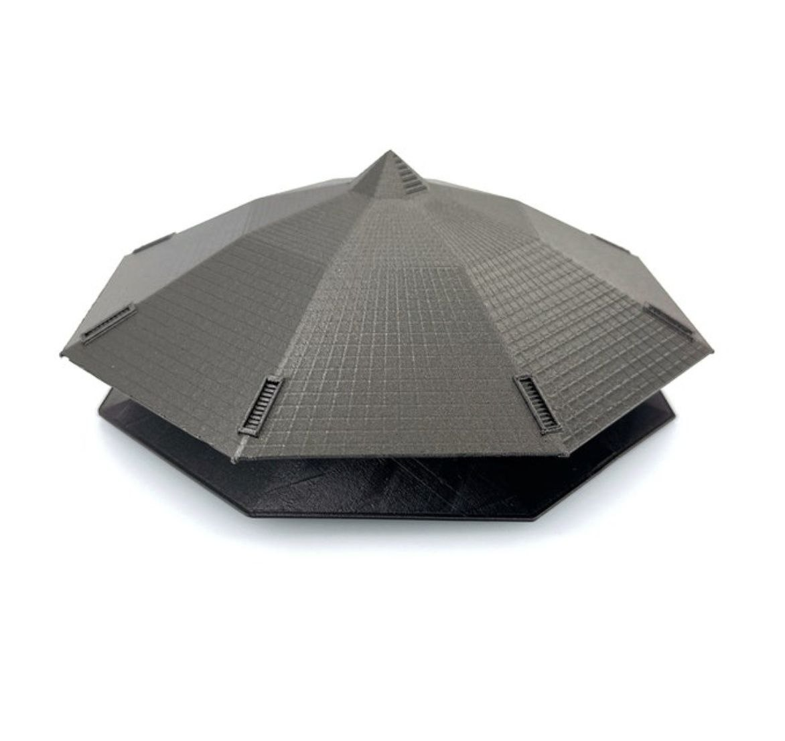
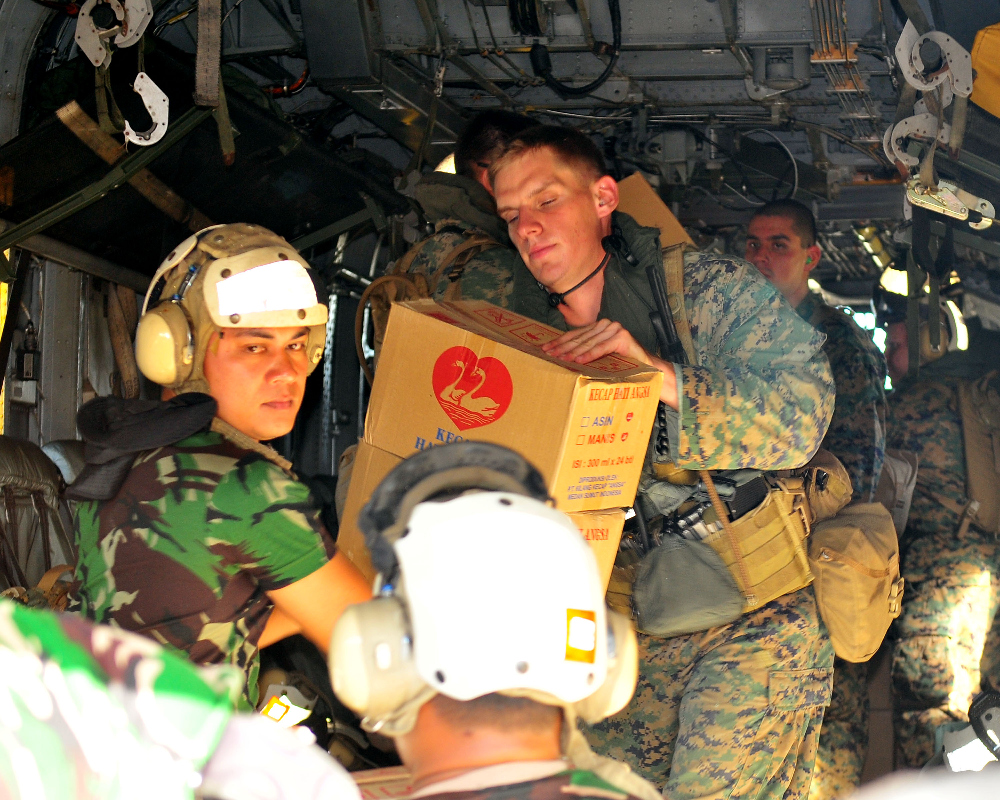
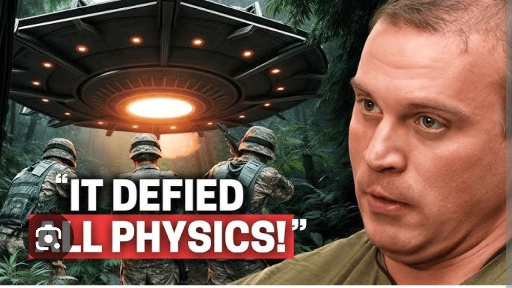
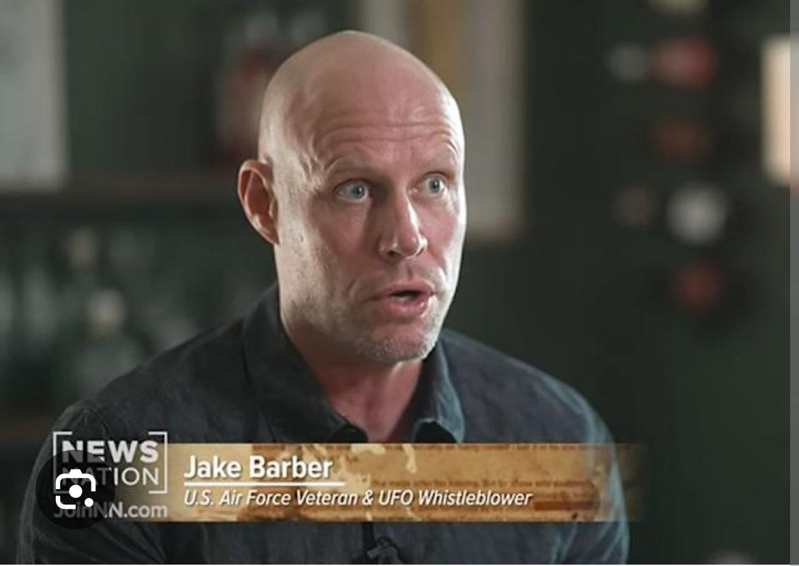

Der Hook: Katastrophengebiet, Hilfsmission, Octagon
2009, Sumatra. Nach Erdbeben, Zerstörung und humanitären Einsätzen liegt über der Region der Ausnahmezustand. Genau in diesem Umfeld will der ehemalige US-Marine Michael Herrera eine Begegnung gemacht haben, die bis heute wie eine der düstersten modernen UFO-Geschichten klingt. Laut seiner Schilderung stieß seine Einheit während eines Einsatzes in Indonesien auf ein riesiges, schwebendes, achteckiges Flugobjekt — bewacht von bewaffneten Männern ohne erkennbare Kennzeichen.
Gerade dieser Einstieg macht den Fall so stark. Es ist keine ferne Lichterscheinung und keine vage Himmelsbeobachtung. Es ist ein Katastrophengebiet, ein realer militärischer Rahmen und dann plötzlich ein Motiv, das eher nach Black Ops, geheimer Logistik und verdecktem Programm klingt als nach einem normalen Einsatz.


Michael Herrera und der Dschungel-Zwischenfall
Herrera zufolge war seine Gruppe damals im Rahmen einer Hilfsmission in der Nähe von Padang unterwegs. Was zunächst wie ein gewöhnlicher militärischer Auftrag im Katastrophengebiet wirkte, soll sich innerhalb weniger Augenblicke in etwas völlig anderes verwandelt haben. Auf einer Anhöhe im Dschungel bemerkte die Einheit nach seiner späteren Aussage ein großes Objekt, das sich deutlich von allem unterschied, was dort hätte sein dürfen.
In späteren Erzählfassungen wird dieses Objekt als massiv, dunkel, teilweise matte-black wirkend und geometrisch ungewöhnlich beschrieben. Genau diese visuelle Fremdheit sorgt dafür, dass der Fall hängen bleibt. Er klingt nicht wie ein ferner Lichtpunkt, sondern wie etwas Körperliches, fast Industrielles — ein Objekt, das dort nicht nur gesehen, sondern als reale Präsenz erlebt worden sein soll.

Die bewaffneten Männer und die Container-Frage
Für viele beginnt das eigentliche Rabbit Hole nicht beim Objekt selbst, sondern bei dem, was laut Herrera daneben geschah. Seine Schilderung klingt nicht nach einer zufälligen Beobachtung, sondern nach einer direkten Konfrontation mit einer abgeschotteten Operation. Laut seiner Darstellung befanden sich in der Nähe des Objekts bewaffnete Männer ohne klare Abzeichen, die seiner Einheit sofort klarmachten, dass sie etwas gesehen hatten, das sie nicht hätten sehen sollen.
Besonders diskutiert wird bis heute die Frage, was dort eigentlich verladen, bewacht oder verborgen wurde. In verschiedenen späteren Interviews und Nacherzählungen tauchen Hinweise auf Container, geheime Fracht und noch brisantere Deutungen auf. Genau hier beginnt allerdings auch der Bereich, in dem sich Herreras Kernschilderung und ein später gewachsenes Narrativ zunehmend vermischen.
Warum der Fall modern wirkt
Anders als ältere Klassiker wie Roswell oder Varginha ist der Herrera-Fall ein Produkt des heutigen Disclosure-Zeitalters. Whistleblower, Podcasts, NewsNation, Greer-Umfeld, Community-Recherche, Reddit-Verifikation, Gegenstimmen, Debunk-Versuche — all das gehört hier bereits zum Fall selbst. Das Mysterium besteht deshalb nicht nur aus dem angeblichen Ereignis, sondern auch aus dem digitalen Nachleben der Story.
Genau diese Mischung macht die Akte für heutige Leser so stark: Sie fühlt sich nicht wie ein kalter Archivfall an, sondern wie etwas, das gerade jetzt noch wächst, diskutiert und mythologisch aufgeladen wird.
Jake Barber als Cross-Referenz
Zusätzliche Brisanz bekam Herreras Geschichte erst dadurch, dass Beobachter später Parallelen zu Aussagen anderer moderner Whistleblower zogen — darunter auch Jake Barber. Dabei geht es nicht um denselben Vorfall, sondern um wiederkehrende Motive: abgeschottete Operationen, ungewöhnliche Fluggeräte, geheime Programme und die Vermutung, dass hinter einzelnen Berichten ein größeres verborgenes System stehen könnte.
Als direkter Beweis für Herreras Schilderung taugt diese Verbindung nicht. Als Cross-Referenz innerhalb des modernen Disclosure-Narrativs ist sie jedoch bemerkenswert — vor allem, weil dadurch aus einem isolierten Dschungel-Zwischenfall plötzlich ein Teil eines viel größeren und dunkleren Gesamtbildes wird.

Die dunklere Deutung: Menschenhandel oder Mythenschicht?
Gerade im erweiterten Whistleblower- und Podcast-Umfeld wird der Fall noch düsterer erzählt. Dort tauchen Spekulationen über Container, sensitive Personen, geheime Transporte und in manchen Versionen sogar Menschenhandels-Bezüge auf. Für Rabbit-Hole-Leser ist das natürlich hochinteressant — aber genau hier muss man am saubersten formulieren.
Stand heute ist genau dieser Teil eher eine wachsende Mythenschicht rund um den Fall als ein unabhängig bestätigter Kern. Für den Blog ist das trotzdem wertvoll, weil es zeigt, warum Michael Herreras Erzählung nicht als isolierte UFO-Sichtung wahrgenommen wird, sondern als Einstieg in ein viel größeres und unheimlicheres Narrativ.
Warum das Octagon von Sumatra hängen bleibt
Der Herrera-Fall bleibt haften, weil sein Bild sofort sitzt: ein Katastrophengebiet in Indonesien, ein Trupp Marines auf Hilfsmission, ein angeblich riesiges achteckiges Flugobjekt im Dschungel und bewaffnete Männer, die dort offenbar nichts dem Zufall überlassen wollten. Das ist visuell, narrativ und psychologisch enorm stark.
Ob Herrera 2009 tatsächlich auf etwas Nicht-Menschliches, auf geheime Militärtechnik oder auf eine Geschichte stieß, die im Lauf der Zeit größer wurde als ihr Ursprung, lässt sich bis heute nicht endgültig klären. Genau das macht das Octagon von Sumatra zu einer dieser modernen Akten, bei denen nicht nur der Vorfall selbst fasziniert — sondern auch das, was später aus ihm geworden ist.